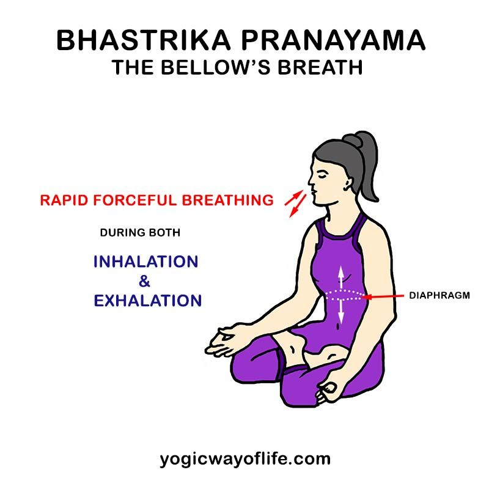

Pranayama
"Pranayama is control of Breath". "Prana" is Breath or vital energy in the body. On subtle levels prana represents the pranic energy responsible for life or life force, and "ayama" means control. So Pranayama is "Control of Breath".
he first two fingers of the right hand palm are to be curved and last two fingers are to be kept straight and to be held together. Now straighten the thumb and bending the right hand in the elbow, place the curved fingers in such a way that they come near the lips. Keep the hand from shoulder to elbow glued to the chest. Keep the right hand thumb on the right side of the nose and last two fingers on the left side of the nose. Now by pressing the thumb, the nasal cavity on the right side can be closed and by pressing the last two fingers left side cavity can be closed. The pressure should be light and on just below the nasal bone, where the fleshy part begins. With this arrangement of the fingers, one can close any of the two nasal cavities. Here only the movement of thumb and the last two fingers is expected.
Movement of other parts should be avoided. The face should be kept quite gay and relaxed in order to practice breathing more effectively. Further, in order to practice the cycle of inhaling and exhaling, six supplementary types are given. In all these types, the speed of breathing is more. These are actually the types of quick breathing. While practicing these types one should first sit in one of the following Asanas: Padmasana, Vajrasana or Swastikasana. Then, the left hand should be kept in Dhyana Mudra and the right hand in Pranava Mudra. The eyes should be closed and the whole attention should be concentrated on breathing so that it will be possible to acquire it

- Type - 1
Keep both the nostrils open and then inhale and exhale with both the nasal passages. This type is nothing but quick breathing with both the nasal cavities. One should inhale and exhale with as much speed as possible and for as much time as feasible.
- Type - 2
Take up Pranava Mudra and close the right nostril with the help of the thumb of the right hand, and inhale with left nostril and also exhale through the same nasal passage. In brief this type can be described as quick breathing with the left nostril.
- Type - 3
In this type left nostril is to be closed and the quick breathing is done with the right nostril.
- Type - 4
In this type close the right nostril, and inhale with the left nostril, and then immediately close left nostril and exhale with the right nostril. In this way try quick breathing by changing the nostrils.
- Type - 5
This type of breathing is just opposite the previous one, that is, the left nostril is closed and inhaling is done with the right nostril, then immediately closing the right nostril, exhaling is done with the left nostril.
Connection Between Yoga & Nature at Yoga Vidya Dham
- Type - 6
This type of breathing is designed by combining previous two types i.e., type 4 and type 5. First inhale with left nostril and exhale with right one, then inhale with right nostril and exhale with left nostril. Later continue the same process i.e. inhaling & exhaling with left and right nostrils alternately. Further switch to fast breathing by increasing the speed of breathing. After sufficient practice the speed of breathing can be increased immensely.
Initially one should start with eleven cycles of breathing, and it should be increased to one hundred and twenty one without any fear. However, later the breathing should be made a part of daily practice of other Asanas, and be practiced for two to three minutes. All these types can also be practiced with slow inhalation and exhalation. Here it is important to note that practicing these types of breathing does not mean doing Pranayama. This is simply a preparation of the actual practice of Pranayama.